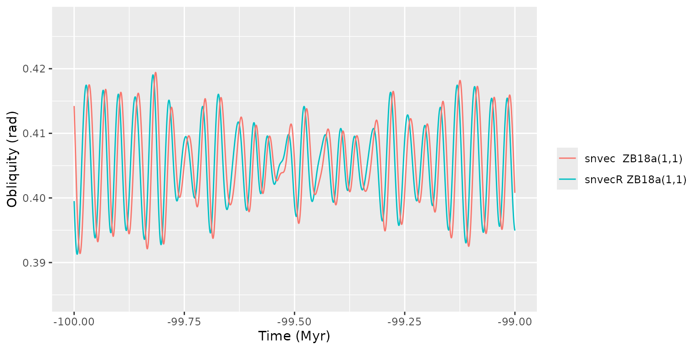

Introduction
The function snvec() uses some of the parameters of a
full astronomical solution (AS) such as ZB18a from Zeebe and Lourens
(2019) in combination with values for tidal dissipation (Td)
and dynamical ellipticity (Ed) to calculate precession and
obliquity (or tilt).
In this vignette we show how we can run snvec() and
contrast the result to pre-computed solutions, which were calculated
using the c-routine.
Apply snvec
For the full 100 Myr available:
dat <- snvec(-1e5, 1, 1, astronomical_solution = "full-ZB18a")
#> ℹ The astronomical solution "full-ZB18a" has not been cached.
#> ℹ Reading full-ZB18a.dat from website <http://www.soest.hawaii.edu/oceanography/faculty/zeebe_files/Astro/PrecTilt/OS/ZB18a/ems-plan3.dat>.
#> ℹ Calculating helper columns.
#> ℹ The cache directory is /tmp/RtmpTcRBQv/snvecR1dbf52cb88d5.
#> ℹ Saved astronomical solution with helper columns full-ZB18a.rds to cache.
#> ℹ Future calls to `get_solution("full-ZB18a")` will read from the cache.
#> ! If you want to read from scratch, specify `force = TRUE`.
#> This is snvecR VERSION: 3.10.0.9000 2025-03-05
#> Richard E. Zeebe
#> Ilja J. Kocken
#>
#> Integration parameters:
#> • `tend` = -1e+05 kyr
#> • `ed` = 1
#> • `td` = 1
#> • `astronomical_solution` = "full-ZB18a"
#> • `os_ref_frame` = "HCI"
#> • `os_omt` = defaulting to 75.594
#> • `os_inct` = defaulting to 7.155
#> • `tres` = -0.4 kyr
#> • `atol` = 1e-05
#> • `rtol` = 0
#> • `solver` = "vode"
#> ℹ started at "2025-03-05 10:27:51.774231"
#> Final values:
#> • s[1][2][3]: -0.254597659597688, -0.139890822178054, and 0.950419666189946
#> • s-error = |s|-1: -0.00617559283197311
#> Final values:
#> • obliquity: 0.399513414729974 rad
#> • precession: -2.73504927330255 rad
#> ℹ stopped at "2025-03-05 10:28:11.991742"
#> ℹ total duration: 20.22Load PT-solution
pt <- get_solution("PT-ZB18a(1,1)")
#> ℹ The astronomical solution "PT-ZB18a(1.0000,1.0000)" has not been cached.
#> ℹ Reading PT-ZB18a(1.0000,1.0000).dat from website <http://www.soest.hawaii.edu/oceanography/faculty/zeebe_files/Astro/PrecTilt/ZB18a/asc/PT.De1.0000Td1.0000.dat>.
#> ℹ The cache directory is /tmp/RtmpTcRBQv/snvecR1dbf52cb88d5.
#> ℹ Saved astronomical solution with helper columns PT-ZB18a(1.0000,1.0000).rds
#> to cache.
#> ℹ Future calls to `get_solution("PT-ZB18a(1.0000,1.0000)")` will read from the
#> cache.
#> ! If you want to read from scratch, specify `force = TRUE`.Inspect results
We find that despite the different ODE solvers and timesteps, the C- and R-implementations are almost identical up to -60 Myr.
pl <- ggplot(dat, aes(x = time / 1000, y = cp)) +
labs(x = "Time (Myr)",
y = "Climatic precession") +
geom_line(aes(colour = "snvecR ZB18a(1,1)")) +
geom_line(aes(colour = "snvec ZB18a(1,1)"),
data = pt) +
# add eccentricity
geom_line(aes(y = ee, colour = "ZB18a eccentricity"),
linetype = "solid",
data = get_solution("full-ZB18a")) +
labs(colour = "")
pl + xlim(-60, -59)
#> Warning: Removed 247500 rows containing missing values or values outside the scale range
#> (`geom_line()`).
#> Warning: Removed 246987 rows containing missing values or values outside the scale range
#> (`geom_line()`).
#> Warning: Removed 247500 rows containing missing values or values outside the scale range
#> (`geom_line()`).
plo <- ggplot(dat, aes(x = time / 1000, y = epl)) +
labs(x = "Time (Myr)",
y = "Obliquity (rad)") +
geom_line(aes(colour = "snvecR ZB18a(1,1)")) +
geom_line(aes(colour = "snvec ZB18a(1,1)"), data = pt) +
labs(colour = "")
plo + xlim(-60, -59)
#> Warning: Removed 247500 rows containing missing values or values outside the scale range
#> (`geom_line()`).
#> Warning: Removed 246987 rows containing missing values or values outside the scale range
#> (`geom_line()`).But note the subtle differences at around -100 Myr. This is not significant, however, because this difference occurs far beyond the horizon of predictability in the orbital solutions (the eccentricity curves).
pl + xlim(-100, -99)
#> Warning: Removed 247500 rows containing missing values or values outside the scale range
#> (`geom_line()`).
#> Warning: Removed 246985 rows containing missing values or values outside the scale range
#> (`geom_line()`).
#> Warning: Removed 247500 rows containing missing values or values outside the scale range
#> (`geom_line()`).
plo + xlim(-100, -99)
#> Warning: Removed 247500 rows containing missing values or values outside the scale range
#> (`geom_line()`).
#> Warning: Removed 246985 rows containing missing values or values outside the scale range
#> (`geom_line()`).
References
Zeebe, R. E., & Lourens, L. J. (2019). Solar System chaos and the Paleocene–Eocene boundary age constrained by geology and astronomy. Science, 365(6456), 926–929. doi:10.1126/science.aax0612.
Zeebe, R. E., & Lourens, L. J. (2022). A deep-time dating tool for paleo-applications utilizing obliquity and precession cycles: The role of dynamical ellipticity and tidal dissipation. Paleoceanography and Paleoclimatology, e2021PA004349. doi:10.1029/2021PA004349.